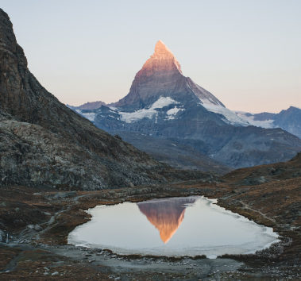
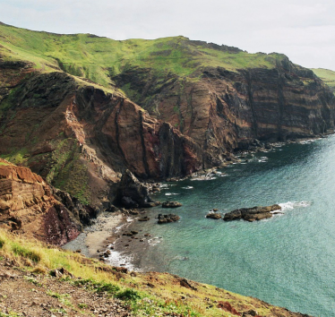
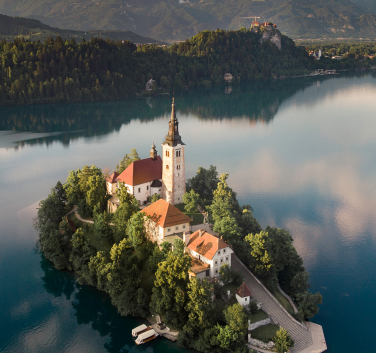

La Suisse en train panoramique
Parmi les plus beaux voyages en train d'Europe, cet itinéraire de 6 jours vous permettra de découvrir les lacs et glaciers Suisse à bord de trains panoramiques
À partir de 1400€ / personne

8 jours de trek à Madère
Véritable paradis sauvage, Madère regorge de paysages époustouflants, volcans, forêt et mer, vous en prendrez plein les yeux. Complété par un accueil chez les chaleureux madériens
À partir de 800€ / personne

Découverte de la Slovénie
Entre VTT électrique, Kayak et randonnée, découvrez toutes les merveilles de la Slovénie : alpages, montagnes et lac. 8 jours de voyages en connexion avec la nature
À partir de 1300€ / personne

Voyager vers le Haut